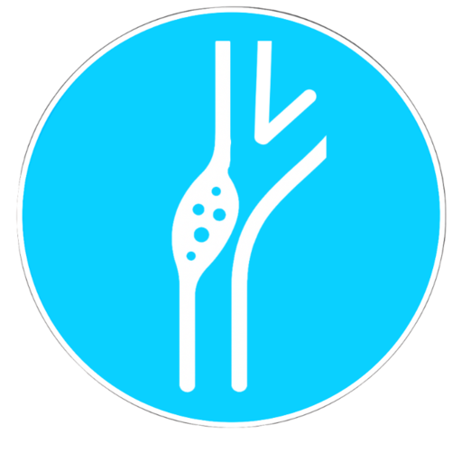
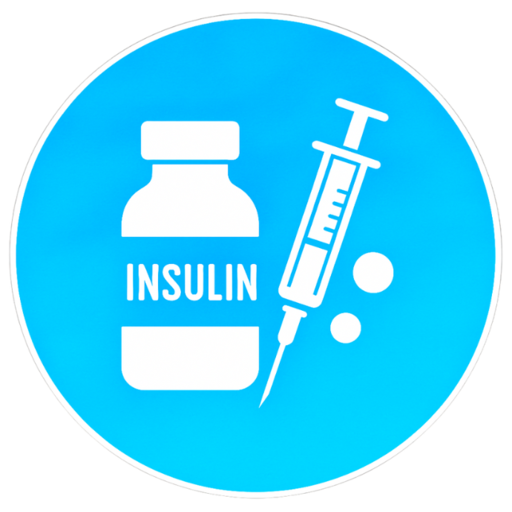

Fibrilación auricular
Selección de ACOD/AVK según escalas de riesgo, condiciones clínicas e interacciones farmacológicas.

Foramen oval permeable
Recomendación de tratamiento en FOP según RoPE y criterios anatómicos.

Otras cardiopatías embolígenas
Ayuda a la selección del tratamiento en cardiopatías embolígenas distintas a FA y FOP.

Ictus aterotrombótico
Manejo de antiagregación y estrategias de prevención secundaria.

Estenosis carotídea
Selección de tratamiento en estenosis carotídea según clínica, morfología de la placa, anatomía y grado de estenosis.

Insulinoterapia
Terapia Basal-Bolus-Corrección en la Unidad de Ictus.

Hipolipemiantes
Manejo de hipolipemiantes según tipo de ictus y LDL-c.

Territorios vasculares
Mapas cerebrales con sombreado por territorios arteriales.

Ictus GPS
Herramienta para el diagnóstico de localización vascular del ictus.